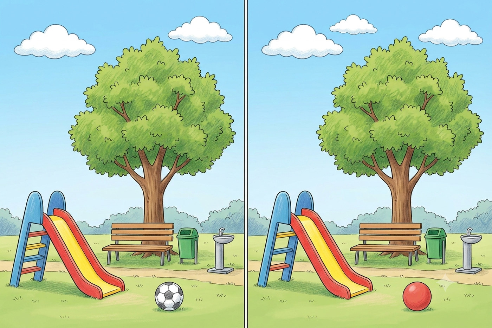
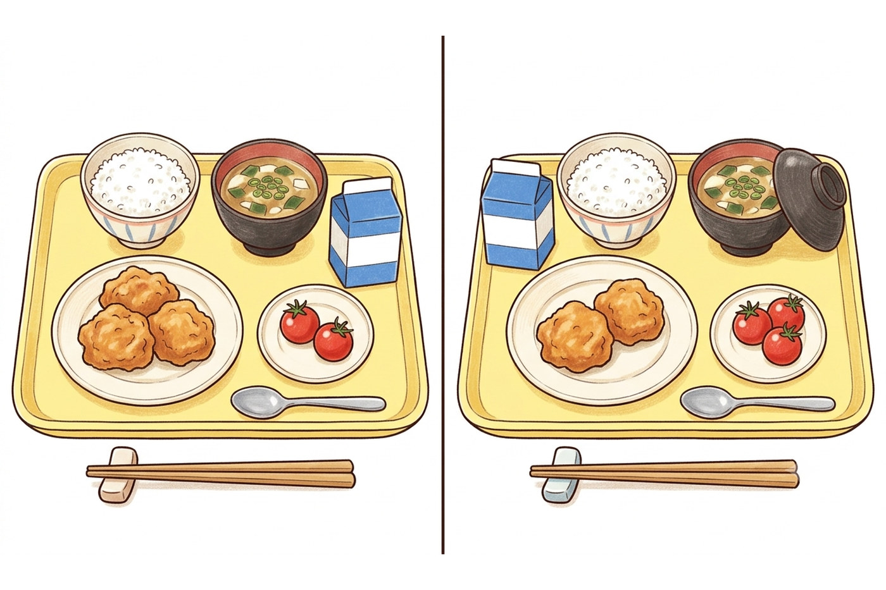
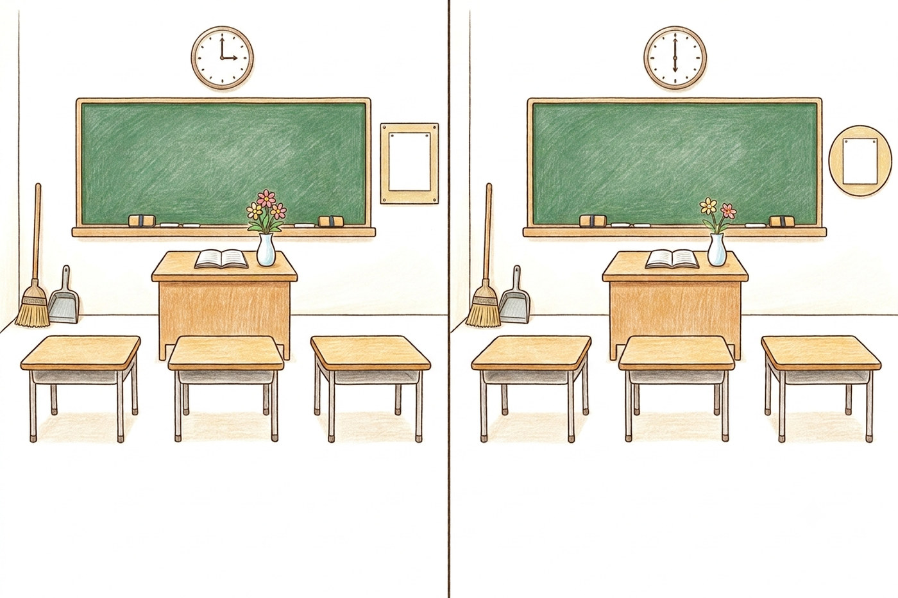

間違い探しは、すきま時間の遊びとして使えます。それと同時に、「よく見て、ちがいを見つける」練習にもなります。2つの絵を行ったり来たりして見比べる。見つけたことを言葉にする。通級や個別の指導で、ここを育てたい場面は多いと思います。
ただ、そのための1枚を用意するのが大変です。素材を探して、切って、貼って、その子に合わせて作り直す。「間違い探しは、作るのがいちばん時間がかかる」という声を、通級に関わっている先生から聞きました。
Geminiの画像生成なら、その1枚をその場で作れます。場面も、ちがいの数も、注文のしかたで変えられます。コピペで使えるプロンプトを5本、実際にGeminiで生成して確かめたものだけ載せました。

市販の間違い探しは、むずかしさが決まっています。自分で作れるいちばんの利点は、そこを動かせることです。
変えられるところは4つあります。
この中でいちばん効くのは場所です。同じ「花が1本ちがう」でも、まん中に置けば見つかり、すみに置けば探すことになります。1つ目が見つからないまま止まってしまうときは、数を減らすより先に、ちがいをまん中に寄せてください。
「どこがちがう？」で指をさせたら、次は「どうちがう？」です。「右のほうが、花が1本少ない」まで言えたら、それは数と位置と比べ方を、ことばにする練習になっています。指さしのままでも参加はできるので、言える子から順に、で構いません。
答えが分かったあとの1枚も使えます。日をおいてもう一度配ると、こんどは見る順番をたどり直すことになります。「左上から時計まわりに見ていく」という見方は、1回では身につきません。同じ絵で、何回でも確かめられるのが紙のいいところです。
全部、実際に生成して確かめたものです。学年に合わせて、ちがいの数だけ書きかえてください（低学年3か所／中学年5か所／高学年7か所）。
はじめの1本にどうぞ。上の見本がこのプロンプトの出力です。
小学生向けの「間違い探し」用の絵を1枚作ってください。 1枚の画像を左右に分け、左が「絵A」、右が「絵B」です。 左右はまったく同じ構図・同じ色・同じ線で描き、次の3か所だけを変えてください。 場面：晴れた日の公園。人は描かない。 まん中に木が1本、その下にベンチ、ベンチのそばにゴミばこ、 左にすべり台、右に水のみ場、空に雲が2つ、地面にボールが1つ。 やわらかい色えんぴつ風のイラスト、線ははっきり。 変える3か所（ここだけ）： 1. 空の雲の数（左は2つ、右は3つ） 2. ボール（左は白と黒のサッカーボール、右はもようの無い一色のボール） 3. すべり台の階段の段数（左は4段、右は3段） 守ること： - 画像の中に文字・数字・記号を一切入れない - 左右の絵の位置・大きさ・角度をそろえる - 指定した3か所以外は1ミリも変えない - 実在のキャラクター・ロゴ・商品名を描かない - 横長（3:2）
答え（そのまま板書できます）①空の雲の数（2つ／3つ） ②ボールのもよう（ある／ない） ③すべり台の階段の段数（4段／3段）
自分の教室に似ていると、子どもの食いつきが変わります。
小学生向けの「間違い探し」用の絵を1枚作ってください。 1枚の画像を左右に分け、左が「絵A」、右が「絵B」です。 左右はまったく同じ構図・同じ色・同じ線で描き、次の3か所だけを変えてください。 場面：日本の小学校の教室。朝の会の前。子どもは描かない。正面から見た構図。 黒板、その上に丸い時計、教卓、教卓の上に本と花びん、 子どもの机が3つ、右のかべに四角い掲示物が1枚、 左のすみにほうきとちりとり。 やわらかい色えんぴつ風のイラスト、線ははっきり、背景は白っぽく。 変える3か所（ここだけ）： 1. 時計のはりの向き（左は右向き、右は下向き） 2. 花びんの花の本数（左は3本、右は2本） 3. 右のかべの掲示物の形（左は四角、右は丸） 守ること： - 画像の中に文字・数字・記号を一切入れない - 左右の絵の位置・大きさ・角度をそろえる - 指定した3か所以外は1ミリも変えない - 列挙した物だけを描き、それ以外の物（いす・かばん・人・植木ばち等）を足さない - 横長（3:2）
答え①時計のはりの向き ②花の本数（3本／2本） ③かべの掲示物の形（四角／丸）
実際に出たずれ1回目は、絵の上に「絵A」「絵B」という文字が入り、時計の文字ばんにも数字が出ました。「文字は入れないで、もう一度」と言い直したら、下の見本のとおりに消えました。文字が出るのは、時計や掲示物のある場面でよく起きます。
まうえから見た絵は、左右がそろいやすい題材です。給食の時間の話にもつながります。
小学生向けの「間違い探し」用の絵を1枚作ってください。 1枚の画像を左右に分け、左が「絵A」、右が「絵B」です。 左右はまったく同じ構図・同じ色・同じ線で描き、次の5か所だけを変えてください。 場面：給食のおぼんをまうえから見た絵。人は描かない。 おぼんの上に、ごはんの茶わん、みそしるのおわん、 おかずの皿（からあげが3つ）、小さな皿にミニトマトが2つ、 牛乳パック、はしが1ぜん、スプーンが1本。 やわらかい色えんぴつ風のイラスト、線ははっきり、背景は白っぽく。 変える5か所（ここだけ）： 1. からあげの数（左は3つ、右は2つ） 2. ミニトマトの数（左は2つ、右は3つ） 3. スプーンの向き（左は柄が左、右は柄が右） 4. 牛乳パックの位置（左はおぼんの右おく、右はおぼんの左おく） 5. みそしるのおわんのふた（左はふたが無い、右はふたがのっている） 守ること： - 画像の中に文字・数字・記号を一切入れない（牛乳パックにも字を書かない） - 左右の絵の位置・大きさ・角度をそろえる - 指定した5か所以外は1ミリも変えない - 列挙した物だけを描き、それ以外の物を足さない - 横長（3:2）
答え①からあげの数 ②ミニトマトの数 ③スプーンの向き ④牛乳パックの位置 ⑤みそしるのおわんのふた

運動会、いもほり、水そうの金魚、自分の学級文庫。［ ］を埋めるだけです。その子が知っている場面にすると、「これは何の絵か」を考える手間がなくなって、見比べることに集中できます。
埋めるところは4か所だけ。ちがいは「数」と「有無」から選ぶといちばん確実に出ます。
小学生向けの「間違い探し」用の絵を1枚作ってください。 1枚の画像を左右に分け、左が「絵A」、右が「絵B」です。 左右はまったく同じ構図・同じ色・同じ線で描き、次の［3］か所だけを変えてください。 場面：［場面を1行で。人は描かない］ ［画面に置く物を8〜12個、名前で並べる］ やわらかい色えんぴつ風のイラスト、線ははっきり、背景は白っぽく。 変える［3］か所（ここだけ）： 1. ［物の名前］の数（左は［ ］、右は［ ］） 2. ［物の名前］が（左はある、右はない） 3. ［物の名前］の向き（左は［ ］、右は［ ］） 守ること： - 画像の中に文字・数字・記号を一切入れない - 左右の絵の位置・大きさ・角度をそろえる - 指定した所以外は1ミリも変えない - 列挙した物だけを描き、それ以外の物を足さない - 実在のキャラクター・ロゴ・商品名を描かない - 横長（3:2）
ちがいの作り方「数」（花が3本→2本）→「有無」（ちりとりがある→ない）→「向き」（時計のはり）→「形」（まどが四角→丸）の順に確実です。位置を動かす指定は、まわりの物も連れて動くので、使うなら1か所だけに。
左右のずれがどうしても気になるなら、2段構えにします。手間はかかりますが、いちばんそっくりになります。出てきた絵をそのまま渡して直させるやり方は、Geminiの得意なところです。
先に絵を1枚作り、出てきた絵をそのまま渡して「ここだけ直して」と頼みます。絵が2枚になるので、印刷のときに上下に並べてください。
【1回目：絵Aを作る】 小学生向けのイラストを1枚描いてください。 場面：日本の小学校の教室。朝の会の前。子どもは描かない。正面から見た構図。 黒板、その上に丸い時計、教卓、教卓の上に本と花びん（花3本）、 子どもの机が3つ、右のかべに四角い掲示物が1枚、 左のすみにほうきと青いちりとり、窓から日が入っている。 やわらかい色えんぴつ風のイラスト、線ははっきり、背景は白っぽく、影はうすく。 守ること： - 画像の中に文字・数字・記号を一切入れない - 列挙した物だけを描き、それ以外の物を足さない - 横長（3:2） 【2回目：出てきた絵をそのまま渡して、こう頼む】 この画像をもとに、次の3か所だけを変えた絵を作ってください。 それ以外は、線・色・位置・大きさ・角度まで完全に同じにしてください。 1. 時計の長針の向きを変える（下向きにする） 2. 花びんの花を3本から2本にする 3. ほうきの横のちりとりを無くす 守ること： - 変更するのはこの3点だけ。ほかの部分は1ミリも動かさない - 画像の中に文字・数字・記号を入れない - 画角・トリミングを変えない
やってみた結果3か所とも成功し、それ以外の位置や大きさはほぼ完全に一致しました（試したときの3つ目は「ちりとりの色を変える」でしたが、白黒で消えるので、上のプロンプトでは「無くす」に変えています）。ただし絵全体がうっすら描き直されるので、紙のざらつきの質感が変わります。子どもには「ちがい」に見えないので実害はありません。
全員が最後まで手をつけていられるかどうかは、始め方でだいたい決まります。

置く物が多すぎます。8〜12個まで減らしてください。人が入っているならまず人を消します。顔と手はそっくりに描けず、ちがいが勝手に増える原因になります。
ちがいの数を減らすか、「数」と「有無」だけで組み直してください。物の位置を動かす指定と、物の形を大きく変える指定は、まわりまで描き直されます。
「文字・数字・記号を一切入れない」を、注文の最後ではなく先頭近くに書いて、もう一度出してもらいます。時計・掲示物・看板・パッケージがある場面で起きやすいです。
絵の上や下に「絵A」「Picture A」のような見出しだけが出たときは、そのふちを切ってしまうほうが早いです。言い直すと、絵ぜんたいが描き直されて、左右のそろい方まで変わることがあります。
「もっとやさしく（ちがいを大きく、数を減らして）」「もっとむずかしく（ちがいを小さく、すみに置いて）」と、そのまま言えば直ります。